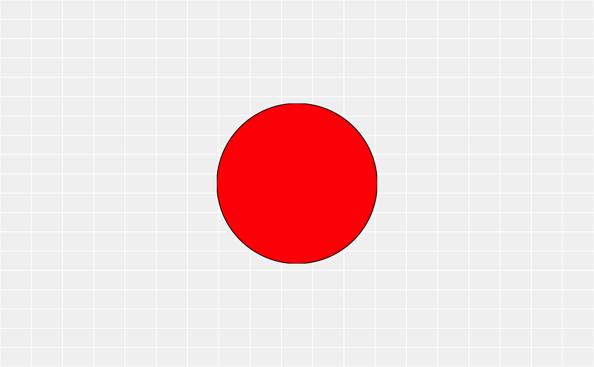
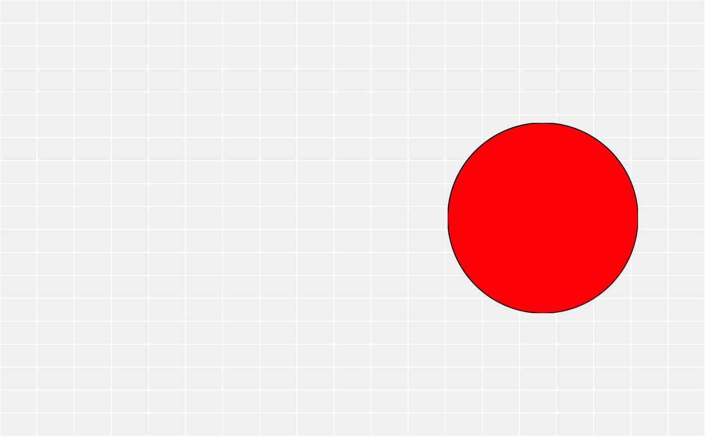

Normally a gtable is considered a matrix when indexing so that indexing is
working on the cell layout and not on the grobs it contains. gtable_filter
allows you to subset the grobs by name and optionally remove rows or columns
if left empty after the subsetting
gtable_filter(x, pattern, fixed = FALSE, trim = TRUE, invert = FALSE)a gtable object
character string containing a regular expression
(or character string for fixed = TRUE) to be matched
in the given character vector. Coerced by
as.character to a character string if possible. If a
character vector of length 2 or more is supplied, the first element
is used with a warning. Missing values are allowed except for
regexpr, gregexpr and regexec.
logical. If TRUE, pattern is a string to be
matched as is. Overrides all conflicting arguments.
if TRUE, gtable_trim() will be used to trim
off any empty cells.
Should the filtering be inverted so that cells matching
pattern is removed instead of kept.
A gtable only containing the matching grobs, potentially stripped of empty columns and rows
Other gtable manipulation:
gtable_add_cols(),
gtable_add_grob(),
gtable_add_padding(),
gtable_add_rows(),
gtable_add_space
library(grid)
gt <- gtable(unit(rep(5, 3), c("cm")), unit(5, "cm"))
rect <- rectGrob(gp = gpar(fill = "black"))
circ <- circleGrob(gp = gpar(fill = "red"))
gt <- gtable_add_grob(gt, rect, 1, 1, name = "rect")
gt <- gtable_add_grob(gt, circ, 1, 3, name = "circ")
plot(gtable_filter(gt, "rect"))
plot(gtable_filter(gt, "rect", trim = FALSE))
plot(gtable_filter(gt, "circ"))

plot(gtable_filter(gt, "circ", trim = FALSE))
